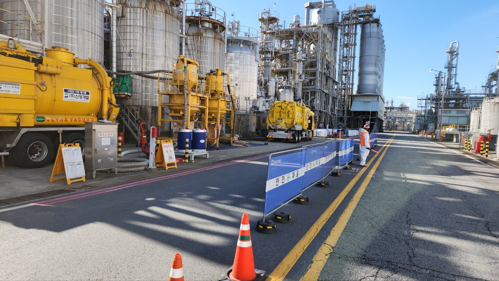

BUSINESS 03
화학세정
배관·열교환기·냉각탑 계통과 보일러 등 산업설비의 세정 업무.
OVERVIEW
대상 설비와 오염 상태, 세정 목적을 먼저 확인합니다.
설비 종류와 오염 상태, 작업 목적을 바탕으로 세정 범위를 검토합니다. 배관류, 열교환기, 냉각탑 계통과 보일러 튜브 등 대상 설비에 필요한 업무를 안내합니다.
대상 설비·업무
- Plant 배관
- 열교환기
- Cooling Tower 계통
- 보일러 Tube 내·외부 관련 세정

FIELD
현장의 모습
안전 구획을 설치하고 차량을 배치한 산업설비 현장의 모습입니다.
사진은 업무의 맥락을 보여 주기 위한 현장 장면입니다. 특정 발주처나 수행 실적을 가리키지 않습니다.
화학세정,
어디까지 가능한지 물어보세요.
대상 설비 · 오염 상태 · 세정 목적 · 가능한 작업 기간 등을 알려 주시면 검토에 필요한 정보를 함께 확인하겠습니다.